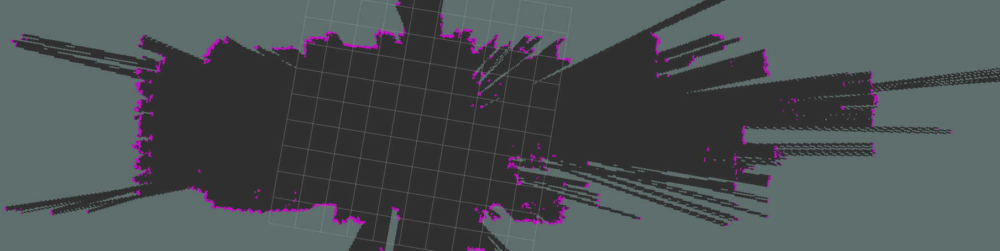
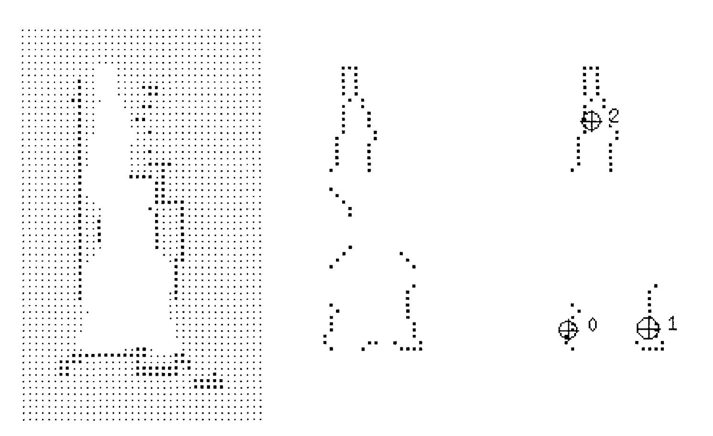

Frontier-Based Exploration in ROS & C++
Using ROS, grid_map and C++ to send a robot to the edge of what it knows.

Once you can generate an occupancy grid like the one above, you can start writing a node for frontier exploration. The grid uses three colours: grey is unknown space, purple is known and occupied, and black is known and free. The cells we care about are frontiers: black cells that border grey, in other words free space next to unknown space.1
The loop has five steps:
- Flood-fill to find frontier cells
- Group them into clusters above a size threshold
- Take each cluster's centroid
- Run A* to find the centroid closest to the robot
- Send a position or velocity goal to that centroid

0Architecture
Before implementing the steps, decide how the ROS node is structured. From a bird's-eye view it needs two subscribers and one publisher. The subscribers take the occupancy grid and the robot's current position. The publisher sends the position goals the loop produces.
Grid handling uses Anybotics' grid_map library, which provides a lot of useful tools for working with grids.
1Find frontiers
The first job is to work out where the frontiers of the map are, using the flood-fill algorithm. The entry point clears the previous result, flood-fills from the robot's cell, and publishes the frontier cells as an RViz marker:
void frontier_finder::find_frontiers() {
this->frontier_indices.clear();
this->flood_fill(robot_index);
visualization_msgs::Marker points;
points.action = visualization_msgs::Marker::DELETEALL;
points.header.frame_id = this->map_frame;
points.ns = "frontier_markers";
points.action = visualization_msgs::Marker::ADD;
points.pose.orientation.w = 1.0;
points.id = 0;
points.type = visualization_msgs::Marker::POINTS;
points.scale.x = 0.1;
points.scale.y = 0.1;
points.color.g = 1.0f;
points.color.a = 1.0;
if ( this->frontier_indices.size() > 0 ) {
for (grid_map::Index element : this->frontier_indices) {
grid_map::Position frontier_cell_pos;
this->gm.getPosition(element, frontier_cell_pos);
geometry_msgs::Point p;
p.x = frontier_cell_pos.x();
p.y = frontier_cell_pos.y();
p.z = 0;
points.points.push_back(p);
}
}
this->frontier_marker_pub.publish(points);
}Flood-fill can be written recursively or iteratively. For exploration, use the iterative version: the recursive one will, without doubt, run into memory-allocation problems.2
Start at the robot's position and push its cell onto visited_indices. While the stack isn't empty, take the top cell, mark it in the visited_cells layer of the grid_map, and check is_frontier(). If it is a frontier, append it to frontier_indices, a plain std::vector. Then push every neighbour that is unvisited, unoccupied and known.
void frontier_finder::flood_fill(grid_map::Index index) {
std::stack<grid_map::Index> visited_indices;
visited_indices.push(index);
while (!visited_indices.empty()) {
grid_map::Index iter = visited_indices.top();
visited_indices.pop();
this->gm.at("visited_cells", iter) = 1;
if(is_frontier(iter)) {
this->frontier_indices.push_back(iter);
} else {
}
grid_map::Index n_idx ;
grid_map::Index e_idx ;
grid_map::Index s_idx ;
grid_map::Index w_idx ;
n_idx << iter.x(), iter.y() - 1 ;
e_idx << iter.x() + 1, iter.y() ;
s_idx << iter.x(), iter.y() + 1 ;
w_idx << iter.x() - 1, iter.y() ;
std::vector<grid_map::Index> neighbors;
neighbors.push_back(n_idx);
neighbors.push_back(e_idx);
neighbors.push_back(s_idx);
neighbors.push_back(w_idx);
for (grid_map::Index neighbor : neighbors) {
if(this->gm.at("eroded_occ", neighbor) == 0 && this->gm.at("visited_cells", neighbor) == 0) {
visited_indices.push(neighbor);
}
}
}
}A cell is a frontier if any of its four neighbours is unknown, which is NaN in the eroded occupancy layer:
bool frontier_finder::is_frontier(grid_map::Index idx) {
grid_map::Index n_idx ;
grid_map::Index e_idx ;
grid_map::Index s_idx ;
grid_map::Index w_idx ;
n_idx << idx.x(), idx.y() - 1 ;
e_idx << idx.x() + 1, idx.y() ;
s_idx << idx.x(), idx.y() + 1 ;
w_idx << idx.x() - 1, idx.y() ;
if (std::isnan(this->gm.at("eroded_occ", n_idx)) ||
std::isnan(this->gm.at("eroded_occ", e_idx)) ||
std::isnan(this->gm.at("eroded_occ", s_idx)) ||
std::isnan(this->gm.at("eroded_occ", w_idx)) ) {
return true;
} else {
return false;
}
}2Cluster the frontiers
After detecting every frontier in the grid, find the clusters. A cluster is a group of frontiers in which every cell neighbours at least one other cell in the group.
Clusters are stored in a std::vector<std::vector<grid_map::Index>>, a list of cluster sets. Iterate over the frontiers and, from each one, start a std::stack that grows as it finds neighbours that are also frontiers. Mark those frontiers as visited so no stack is built twice. A cluster also has to pass a minimum size, here 75 cells.
std::vector<std::vector<grid_map::Index>> frontier_finder::cluster_detection() {
std::vector<std::vector<grid_map::Index>> output;
for (grid_map::Index frontier : this->frontier_indices) {
if(this->gm.at("visited_cells",frontier) == 0) {
std::stack<grid_map::Index> stack;
stack.push(frontier);
std::vector<grid_map::Index> cluster;
cluster.push_back(frontier);
while(!stack.empty()) {
grid_map::Index top_iter = stack.top();
stack.pop();
this->gm.at("visited_cells", top_iter) = 1;
std::vector<grid_map::Index> neighbors = get_neighbors(top_iter);
for (size_t i = 0; i < neighbors.size(); i++) {
auto iter = std::find_if(this->frontier_indices.begin(), this->frontier_indices.end(),
[&](const grid_map::Index& n) {
return (n == neighbors[i]).all();
});
if (iter != this->frontier_indices.end()) {
if(this->gm.at("visited_cells", neighbors[i]) == 0) {
stack.push(neighbors[i]);
}
cluster.push_back(neighbors[i]);
}
}
}
if(cluster.size() > 75) {
output.push_back(cluster);
}
}
}
return output;
}3Find the centroids
This is probably the easiest part: add up each cluster's x and y values and divide by the number of cells.
for (std::vector<grid_map::Index> cluster : clusters) {
grid_map::Index centroid;
centroid.x() = 0;
centroid.y() = 0;
for (grid_map::Index frontier : cluster) {
centroid.x() += frontier.x();
centroid.y() += frontier.y();
}
centroid.x() = centroid.x()/cluster.size();
centroid.y() = centroid.y()/cluster.size();
}4A* to each centroid
Finally, work out which frontier centroid is closest to the robot's current position. Run A* to each centroid and keep the one with the shortest path. A* is well documented elsewhere and isn't rewritten here. The video below shows the result of all of this work.